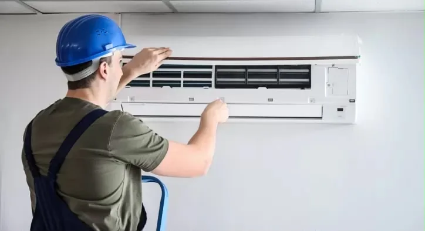

AEM GROUP • ANTALYA
Antalya Klima Montajı
Yeni klima kurulumu veya cihazın yeniden konumlandırılması için uygun montaj ve bağlantı desteği sunuyoruz.
Antalya genelinde hizmet

AEM GROUPWhatsApp'tan Servis Talep Et
Klima Montajı
Yeni klima kurulumu veya cihazın yeniden konumlandırılması için uygun montaj ve bağlantı desteği sunuyoruz.
✓Antalya genelinde hizmet
✓WhatsApp üzerinden doğrudan servis talebi
✓Adres ve iletişim bilgileri açıkça sunulmuştur.
AEM GROUP
AEM GROUP, Antalya genelinde klima servisi ve beyaz eşya servisi sunar. Diğer hizmetlerimizi inceleyebilir veya doğrudan WhatsApp üzerinden bize ulaşabilirsiniz.
Ana sayfaya dön